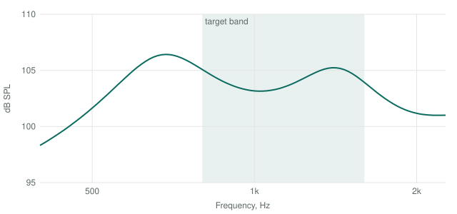
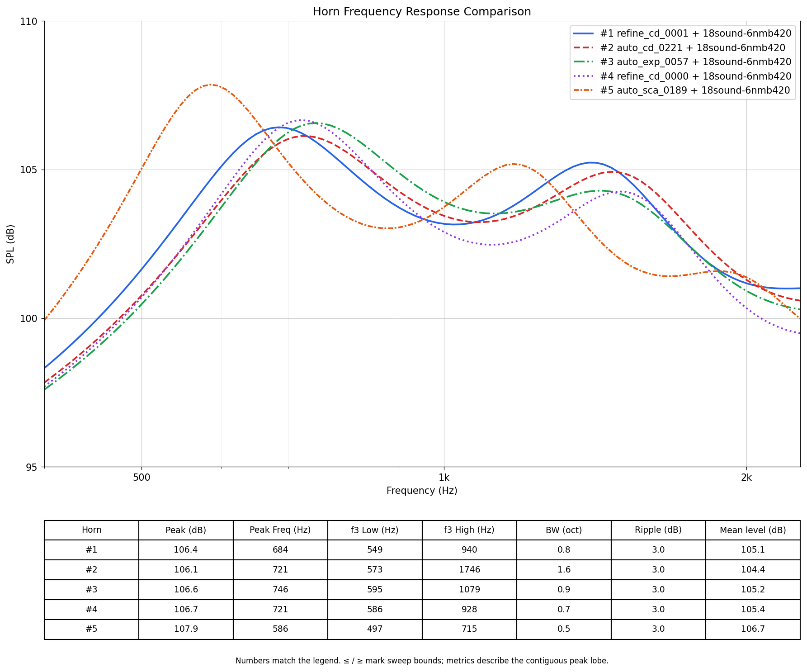
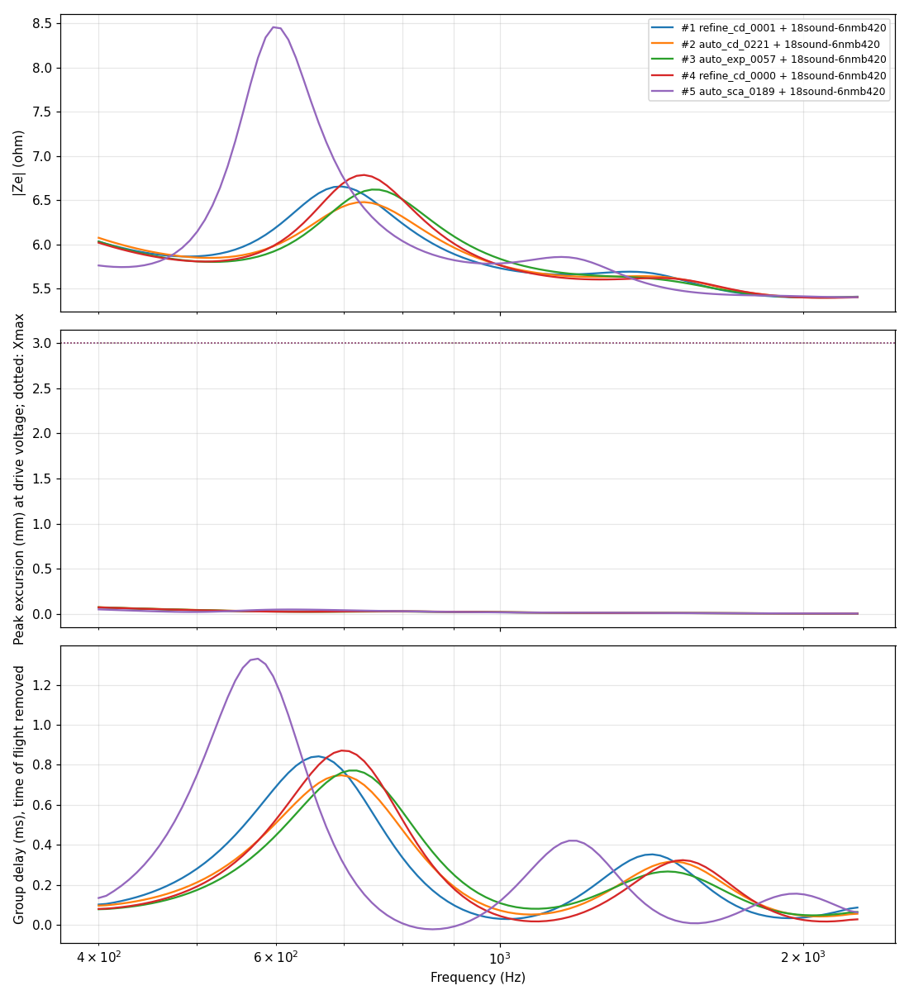
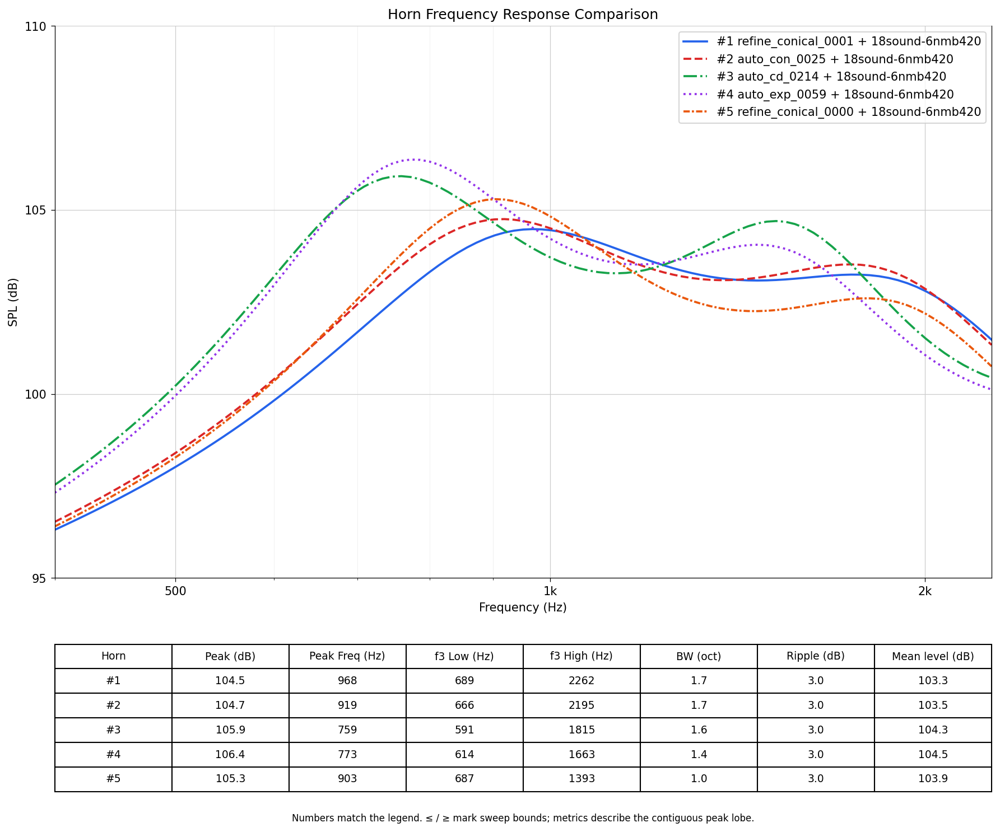
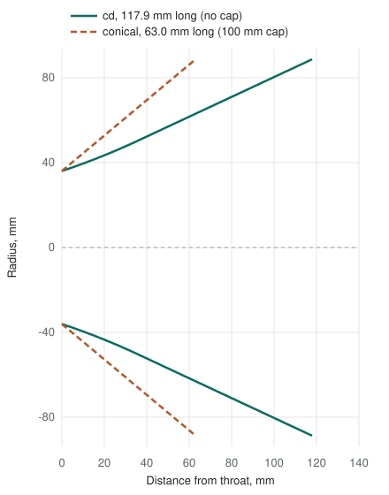

Worked example
A horn for 800 to 1600 Hz
One real run, from the command to the files you would build from. Every number on this page comes from run 20261117T005341Z-14e497b7 (source revision 51427ee) unless another run is named.
In short
The question was which driver, on which horn, gives the most level and a flat response from 800 to 1600 Hz, using seven hand-checked drivers. The answer is an 18Sound 6NMB420 6.5 inch cone on a horn 117.9 mm long, with a 72.1 mm throat and a 177.4 mm mouth (diameters). It is predicted to stay within 2.08 dB across the band at 104.13 dB for 2.83 V at 1 m. The two compression drivers that reached the 3D stage were rejected because the band starts below their rated range. If you are new to the terms, read horn basics first.
On this page:
- The question
- What the search did
- The winning design
- Why the runners-up lost
- What was rejected
- Adding a length cap
- Why the old winner no longer wins
- The files and how to build
- Caveats
1. The question
"Which of my drivers, on which horn, gives the most level and the flattest response from 800 to 1600 Hz?" As a command:
just run-auto --target_f_low 800 --target_f_high 1600 --drivers_db data/drivers-curated \
--lem_top_n 3 --refinement_budget 2 --num_bands 2 --num_intervals 101 --mesh_size 0.01- --target_f_low 800 --target_f_high 1600
- The band the horn must cover. Ripple and mean level are measured over it. The solver sweeps wider, from 400 to 2263 Hz, to find the f3 points.
- --drivers_db data/drivers-curated
- The seven hand-checked driver records: three cone drivers and four Peerless compression drivers.
- --lem_top_n 3
- Send three horns from the fast screen to the 3D solver.
- --refinement_budget 2
- Allow two extra 3D solves to adjust the best design.
- --num_bands 2
- Split each solve into two frequency bands that run in parallel.
- --num_intervals 101
- 101 frequency points in the sweep.
- --mesh_size 0.01
- Largest mesh element 10 mm. The solver uses a finer size where the wavelength needs it.
Everything else is a default: 2.83 V RMS drive, a microphone 1 m away on axis, the modal_baffled mouth model (an infinite baffle), a 6 dB ripple limit and a compression ratio limit of 10. The search budget is small on purpose so the run is quick. A larger budget may find a different design.
2. What the search did
- Driver screen: 5 of 7 kept. The 18Sound 6NMB420, Celestion AF3010 and TF0512HE, and the Peerless DFM-2535R00 and DFM-2544R00 passed. The Peerless DFL-2525R00 (Fs 1597 Hz) and DFM-2535R01 (Fs 2026 Hz) resonate above the screen's limit of 1.5 times 800 Hz.
- Throats: 5 proposed, 4 used. Radii of 12.7, 24.7, 36.1, 50.0 and 130.7 mm. The largest is the size where the first axisymmetric duct mode reaches 1600 Hz (ka = 3.83). It is wider than every mouth searched, so it produced no horn. The 36.1 mm radius throat (72.1 mm diameter) was proposed because it puts the 6NMB420's estimated front chamber corner at 1600 Hz.
- Geometry grid: 230 horns. Mouth radius from 47.8 to 88.7 mm and length from 107.2 to 214.4 mm, three values each, derived from 800 Hz. Crossed with the throats and the seven profiles that gives 33 horns per profile (32 tractrix).
- Webster screen: 1,150 pairs. Every horn with every kept driver, scored with a one-dimensional model. Three horns went to the 3D solver: a
cd, an exponential and a scaled tractrix, all with the 36.1 mm radius (72.1 mm diameter) throat. - 3D FEM: 25 pairs scored. The five solved horns (three from the screen, two from refinement) times the five drivers. Ten pairs were rejected, all of them Peerless.
- Refinement: 2 more horns. Starting from the best 3D design (
auto_cd_0221), it first tried a smaller mouth (score 0.758, worse), then a longer horn at the full mouth (score 0.791, better). That used the whole budget. The mouth ended on the upper edge of its search range, so a larger budget would have tried bigger mouths.
Sources: prescreen_result.json, design.json, candidates.csv, lem_results.json and refinement/search_audit.json in the run's outputs/auto/ folder.
3. The winning design
The 18Sound 6NMB420, a 6.5 inch cone driver, on a cd horn: an exponential throat that blends into a cone.
| In-band level | 103.15 to 105.23 dB. Peak 106.4 dB at 684 Hz, below the band. |
|---|---|
| Extension past the band | 1.06 octaves in total |
| Electrical impedance | 5.5 to 6.2 ohm in band |
| Peak cone excursion | 0.028 mm in band at 2.83 V; Xmax is 3 mm |
| Input power | 1.45 W at most in band at 2.83 V; rated 200 W |
| Group delay | 0.03 to 0.35 ms in band |
| Front chamber | Estimated 139.4 cm3 (the open cone closed by a flat plate); Sd / throat area 3.18; corner 1600 Hz |
| Score | 0.791. Status insufficient_evidence: the model finds no limit broken, but driver data are missing. |
The score is the published formula with default weights. For this design: 0.625 × (104.13 − 60) / 60 for level, plus 0.25 × (1 − 2.08 / 12) for ripple, plus 0.125 × 1 for extension (any extension of one octave or more earns the full term). That gives 0.460 + 0.207 + 0.125 = 0.791.

coupled_01_18sound-6nmb420_refine_cd_0001.csv. The shaded area is the target band.


4. Why the runners-up lost
All of the top five use the 6NMB420 and the 72.1 mm diameter throat. The first three are within 0.02 of each other, which the report marks as a near tie. Treat them as equivalent.
| # | Horn | Profile | Mouth dia. (mm) | Length (mm) | Ripple (dB) | Mean (dB) | f3 (Hz) | Score |
|---|---|---|---|---|---|---|---|---|
| 1 | refine_cd_0001 | cd | 177.4 | 117.9 | 2.08 | 104.13 | 485 to 2024 | 0.791 |
| 2 | auto_cd_0221 | cd | 177.4 | 107.2 | 2.36 | 104.14 | 512 to 2033 | 0.785 |
| 3 | auto_exp_0057 | exponential | 177.4 | 107.2 | 2.71 | 104.24 | 524 to 1932 | 0.772 |
| 4 | refine_cd_0000 | cd | 159.7 | 107.2 | 3.35 | 103.56 | 496 to 1964 | 0.758 |
| 5 | auto_sca_0189 | scaled tractrix | 177.4 | 160.8 | 3.69 | 103.59 | 414 to 2157 | 0.752 |
- #2 is the same
cdhorn 10.7 mm shorter. It has 0.28 dB more ripple, which is the whole gap. - #3, the exponential horn, is 0.1 dB louder but 0.63 dB less flat, and it extends less at both ends (0.88 against 1.06 octaves).
- #4 has a smaller mouth. Against #2, the same horn with the full mouth, it loses 0.6 dB of level and adds 1.0 dB of ripple.
- #5, the long scaled tractrix, extends furthest (414 to 2157 Hz). The score gives no credit past one octave of extension, so that buys nothing. It loses on ripple and level.
The other two cone drivers were feasible but quieter. The best Celestion TF0512HE pair gives 96.8 dB (score 0.692) and the best AF3010 pair 90.8 dB (0.652). With the default weights, 7 dB less level outweighs any ripple advantage.
Source: refinement/ranked_results.json and report/auto_summary.txt.
5. What was rejected and why
Ten pairs failed a hard limit. All are the two Peerless compression drivers, on each of the five horns.
| Reason | Pairs | Margin |
|---|---|---|
| Target band outside the driver's usable band | 10 | Both drivers are rated from 1500 Hz; the band starts at 800 Hz |
| Excursion above Xmax at 2.83 V | 5 | DFM-2535R00 only: about 0.16 mm against a 0.1 mm Xmax, over by 0.06 mm on every horn |
A rejected pair is not hidden. The report lists it with the limit and the margin, so you can tell a near miss from a hopeless one. Source: report/auto_rejections.json.
6. Adding a length cap
Suppose the horn must fit in 100 mm. Add one flag:
just run-auto --target_f_low 800 --target_f_high 1600 --drivers_db data/drivers-curated \
--max_length 0.1 --lem_top_n 3 --refinement_budget 2 --num_bands 2 --num_intervals 101 --mesh_size 0.01The length search moves to 40 to 100 mm. The screen scored 221 horns and 1,105 pairs and sent three to the 3D solver. The report warns that 100 mm is below the quarter-wave sizing rule for 800 Hz, which suggests horn loading weakens below about 858 Hz. It also says the model does not show that shortfall for the winner.
| # | Horn | Length (mm) | Ripple (dB) | Mean (dB) | Lower f3 (Hz) | Score |
|---|---|---|---|---|---|---|
| 1 | refine_conical_0001 | 63.0 | 1.40 | 103.74 | 649 | 0.789 |
| 2 | auto_con_0025 | 70.0 | 1.66 | 103.84 | 621 | 0.789 |
| 3 | auto_cd_0214 | 100.0 | 2.47 | 104.15 | 532 | 0.781 |
The winner is a plain conical horn 63 mm long, with the same driver, throat and mouth. Compared with the uncapped cd horn it is 55 mm shorter, 0.4 dB quieter and 0.7 dB flatter in band, and it gives up extension below the band (649 Hz against 485 Hz). The scores are 0.791 and 0.789, so on this score the shorter horn costs almost nothing. Run 20261117T083036Z-36f3461c; open its report.

7. Why the old winner no longer wins
Earlier versions of the pipeline treated the throat as an ideal connection to the driver. For this same command they chose a hyperbolic horn with a 65.0 mm throat diameter, 177.4 mm mouth diameter and 117.9 mm length, at 1.49 dB ripple and 104.88 dB (archived in examples/800-1600-modal).
A real cone driver has air between the cone and the throat: the open cone, closed by the adapter plate. That volume acts as a low-pass filter. Its corner frequency rises with throat area and falls with chamber volume. The pipeline now estimates the volume for cone drivers that have no measured value: 139 cm3 for the 6NMB420.
- On the old 65 mm diameter throat the corner falls near 1.3 kHz, inside the band. The same horn now gives about 6.4 dB ripple, over the 6 dB limit. Because that failure comes only from an estimate, such a design is flagged rather than rejected, and the current search does not propose that throat.
- The current search proposes a throat that puts the corner at 1600 Hz, the top of the band. That is the 72.1 mm diameter throat the winner uses.
- The chamber still changes the answer for the winner: without it the same horn gives 3.23 dB ripple and 102.33 dB, against 2.08 dB and 104.13 dB with it.
The real adapter will differ. A spacer adds volume; a phase plug or cone filler removes it. Measure it, put it in the driver record as front_chamber_volume_cm3 and rerun before you trust either answer.
8. The files and how to build
Inside the run's outputs/auto/ folder:
| File | What it is |
|---|---|
refinement/refine_cd_0001.step | The winner's air volume at true size in millimetres, for CAD. |
report/profile_01_refine_cd_0001.csv | The wall radius r_mm at 101 positions z_mm from the throat. |
report/coupled_01_18sound-6nmb420_refine_cd_0001.csv | Level, impedance, excursion, input and acoustic power, and group delay per frequency. |
report/auto_report.html | The self-contained report. This run's report. |
refinement/ranked_results.json, report/auto_rejections.json, refinement/search_audit.json | The ranking with score terms, the rejections with margins and the refinement trail. |

To build it:
- Import the STEP into CAD, or loft the profile CSV. It describes the air passage only.
- Add a wall thickness outward from that surface, a mouth flange or baffle, and a throat flange that matches the driver's bolt pattern.
- Design the adapter between the cone and the 72.1 mm diameter throat. Measure the air volume it leaves in front of the cone and rerun with that value, because the response depends on it.
- Measure the result. A measurement of a built horn and driver is the evidence this project most needs.
9. Caveats
- The front chamber is a geometric estimate. The winner's evidence gaps are
driver_interface_unverified,moving_mass_and_rear_load_not_separated,front_chamber_volume_estimatedandfront_chamber_not_lumped_in_band. - Excursion and power come from a linear model at 2.83 V. They are not a maximum SPL or thermal prediction.
- Directivity assumes an infinite baffle and has not been validated.
- The search was small and ended with the mouth at the edge of its range. It is not a global optimum. The top three are near ties.
- The 3D solver has passed comparisons with independent codes and one measured horn, and failed others. See how far you can trust it.
The same walkthrough in the repository: WORKED_EXAMPLE. Search rules: SEARCH_AND_SCORING. Files: OUTPUTS.